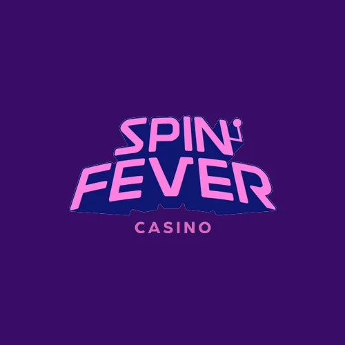
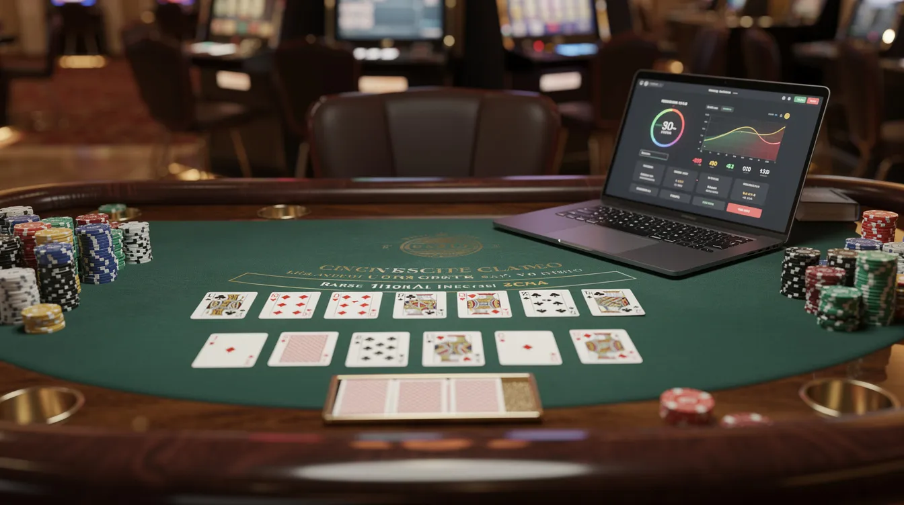
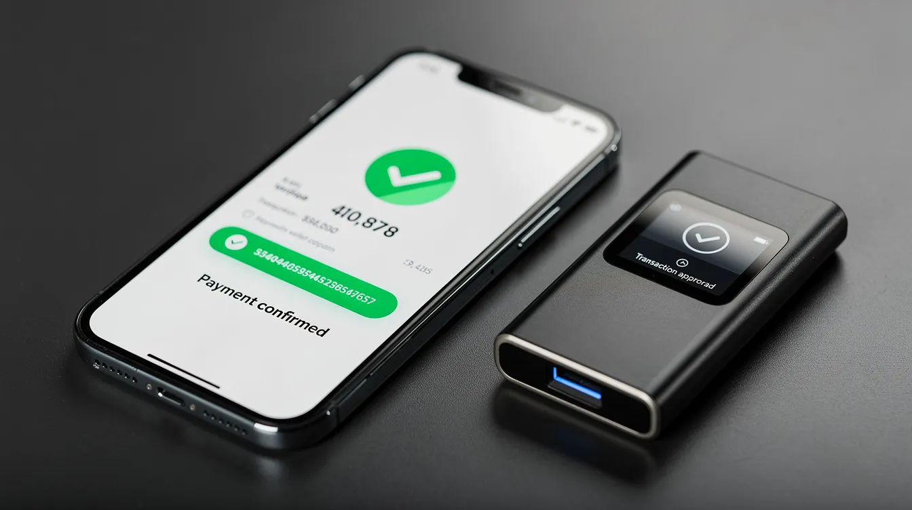

Best Crypto Casinos in 2026 - Fast Payouts, Provably Fair Games & Big Bonuses
The best crypto casino in 2026 isn't just the one with the biggest bonus - it's the site that pairs fast payouts, provably fair games, transparent terms and trusted licensing in one place.
Disclosure: Some of the links below are partner links. We may earn a commission if you sign up - at no extra cost to you. This never influences our editorial ratings or rankings.
Rooli Casino
Welcome Bonus150% up to 3 BTC + 100 Free Spins
Match bonus on first deposit + free spins on top slots.

SpinFever Casino
Welcome Bonus100% up to 3 BTC + 100 Free Spins
Match bonus on first deposit + free spins on top slots.
Best Crypto Casinos Right Now
These are the best crypto casinos in May 2026 for players who want fast withdrawals, big deposit bonuses and strong reputations. We prioritized bitcoin casino sites with reliable withdrawal speed, clear terms and real crypto payment support.
CoinCasino
Best overall balance of large welcome bonuses, low minimum withdrawals and broad casino games.
Review →Lucky Block
Fastest BTC and USDT payouts, with many withdrawals landing in roughly 5–10 minutes.
Review →BC.Game
Best for provably fair game verification, altcoin variety and crypto-native crash and dice games.
Review →JustCasino
Best for simple wallet-to-wallet transfers and a mobile-first online casino layout.
Review →Wild.io
Best for low-KYC crypto gambling and privacy-focused signup.
Review →Thrill
Best for original crash and mini games, rakeback and volume-player rewards.
Review →TG.Casino
Best telegram casino experience for players who want fast access and crypto-first payments.
Review →Full reviews and comparisons are below - including bonuses, coins, KYC notes and the best use case for each crypto casino.
How We Rank the Best Crypto Casinos in 2026
Our rankings are based on hands-on testing patterns used throughout 2025–2026: real deposits, bonus claims, game testing, support checks and timed withdrawals. The goal is to compare crypto casino sites like a player would, not just repeat marketing claims.
Licensing & Legality
We check for an active iGaming license - usually Curaçao, Anjouan or another offshore jurisdiction - and confirm whether crypto casinos legal access depends on your country.
On-Chain Reputation
Transaction transparency matters. We look for visible payout history, clean transaction behavior and strong wallet management as signals of a safe operator.
Withdrawal Speed
Every serious review tests BTC and at least one faster asset such as USDT, LTC or SOL - with timed payouts to prove real-world settlement speed.
Game Fairness
The best crypto casinos offer provably fair games that let players verify outcomes using blockchain technology - building real trust in every round.
Bonus Value
We compare match bonuses, free spins, reload bonuses, wagering requirements, max bet rules, game weighting and time limits - not just headline numbers.
KYC & Privacy
We check whether document checks happen at signup, first withdrawal or only when AML thresholds are triggered.
User Experience
Cashier clarity, mobile layout, live chat quality, game filters and responsible gambling controls all factor into the final score.
Real Activity
Rankings are updated continuously based on transaction volume, active wallets and game variety to reflect actual player behavior.
Each casino is play-tested with real deposits, claims of deposit bonuses or free spins, and timed withdrawals in BTC plus at least one altcoin such as USDT or SOL. Reputable casinos typically require a limited number of blockchain confirmations to unlock funds, minimizing deposit friction.
High-rated platforms reduce counterparty risk by allowing players to connect external web3 wallets or use secure cold-storage infrastructure. Casinos failing basic checks - slow or denied payouts, unverifiable licenses, rigged terms, fake "provably fair" tools or hidden fees - are excluded. BitStarz, Thunderpick and BC.Game are recognized reputable online casinos accepting cryptocurrency, but every site still needs current testing because offers and payment policies change quickly.
Top 10 Crypto Casinos - At a Glance
A quick snapshot of the current top bitcoin casino sites and what each one does well - focused on welcome offers, supported coins and typical payout windows.
| # | Crypto Casino | Welcome Bonus | Coins | Payout Speed | Best For |
|---|---|---|---|---|---|
| 1 | CoinCasino | 200% up to $30,000 + 50–100 FS | BTC · ETH · USDT · SOL · LTC + 20 more | 5–15 min | Slots, live dealer & sportsbook |
| 2 | Lucky Block | 200% up to $25,000 + 50 FS | BTC · ETH · USDT · BNB · LTC · DOGE | 5–30 min | Sportsbook & quick withdrawals |
| 3 | BC.Game | Up to ~$4,000 + 400 FS | 100+ coins (BTC · ETH · USDT · SOL · DOGE) | 5–20 min | Crash, dice & provably fair |
| 4 | JustCasino | Up to $500 + 100 FS | BTC · ETH · USDT · LTC · DOGE · TRX | < 15 min | Mobile-first slots play |
| 5 | Wild.io | 120% up to $5,000 + 75 FS | BTC · ETH · LTC · DOGE · USDT | Minutes | Privacy & crash games |
| 6 | Thrill | Up to 70% rakeback + reloads | BTC · ETH · USDT · SOL | Fast (verified) | Original crash & mini games |
| 7 | Betplay | Deposit bonuses + free bets | BTC · ETH · USDT · LTC | Mins–hours | Sports betting & parlays |
| 8 | TG.Casino | Crypto-first welcome + cashback | BTC · ETH · USDT · TON | Minutes | Telegram-native play |
| 9 | Mega Dice | Big bonuses + daily rakeback | BTC · ETH · USDT · BNB · SOL | < 30 min | Crypto casino games & promos |
| 10 | Vave | Deposit bonuses + free bets | BTC · ETH · USDT · LTC · TRX | Mins–hours | Sports betting & live markets |
Detailed Reviews of the Best Crypto Casinos
The following mini-reviews look at the leading crypto casinos for 2026 in more detail. Each review covers bonus value, games, payments, KYC notes and standout crypto-specific features such as fast transfers, low-KYC play or provably fair verification. The tone is factual rather than promotional - a large bonus is useful only if the wagering requirements are realistic and the withdrawal policy is clear.
CoinCasino - Best Overall Crypto Casino in 2026
CoinCasino is currently the best bitcoin casino overall for players who want a large welcome package, low minimum withdrawals and a broad game selection in one account. It is a strong all-rounder rather than a single-feature site.
- Bonus: New players in 2026 can often find a 200% deposit bonus up to $30,000 plus 50–100 free spins on selected online slots, depending on location and campaign.
- Games: The library usually sits in the 4,000–5,000+ range - including video slots, table games, live dealer games, specialty games and provably fair originals such as dice, crash and Plinko.
- Payments: CoinCasino supports 20+ coins, including BTC, ETH, USDT, SOL and LTC. Minimum BTC withdrawals can be as low as 0.0003 BTC, with typical withdrawal speed around 5–15 minutes.
- Safety: Look for Curaçao licensing, SSL encryption, two-factor authentication, clear bonus rules and published withdrawal limits before depositing.
- VIP: The generous VIP program is useful for high rollers - rakeback, reload perks, cashback, higher limits and personalized support.
- Best for: Players who want one crypto casino account for slots, sportsbook, live dealer tables and high-limit play.
Lucky Block - Fastest BTC Withdrawals
Lucky Block is a top pick for fast withdrawals, especially for players using BTC, USDT, BNB or LTC. Recent tests and player reports commonly put crypto payouts in the 5–30 minute range, with many standard withdrawals settling in about 5–10 minutes.
- Bonus: The 2026 welcome offer is often listed as a 200% match up to $25,000 + 50 free spins for first-time deposits.
- Ongoing value: A recurring 10% weekly cashback bonus can be more useful than a one-time lucrative welcome bonus if you play regularly.
- Games: Lucky Block offers thousands of slots, roulette, blackjack, live dealer games and a full sportsbook covering major leagues.
- Payments: Coins include BTC, ETH, USDT, BNB and LTC. The site is known for low internal fees and a clear cashier.
- KYC: A simple one-time ID check may apply around defined thresholds, often in the $2,000–$5,000 range or when risk checks are triggered.
- Watch out: Higher wagering requirements can apply to big bonuses - read the rules before accepting the full casino bonus.
BC.Game - Best for Provably Fair Gaming & Altcoin Variety
BC.Game is the standout crypto casino for players who care about altcoin support and provably fair gaming. It is also one of the best-known bitcoin and crypto casinos for original crypto-native titles.
- Bonus: Early-to-mid 2026 offers commonly include a multi-step combined bonus of up to about 470% and around $4,000 in value, plus hundreds of free spins.
- Coins: BC.Game supports over 150 cryptocurrencies in many markets, including major coins and niche tokens - useful if you want to gamble with your preferred coin.
- Payouts: Typical withdrawals are often 5–20 minutes, although Bitcoin mainchain can be slower during congestion.
- Provably fair tools: Crash, dice, mines, limbo and other crypto casino games use public seed hashes and verification tools that players can test.
- VIP: A native token and VIP system can provide rakeback, cashback and extra rewards for regular players.
- Best for: Players who want open-source server/client seed checks, niche altcoins, crash and bingo games and strong crypto-native design.
JustCasino - Best for Instant Wallet-to-Wallet Transfers
JustCasino is a good fit for players who want simple wallet-to-wallet transfers with BTC, ETH and stablecoins like USDT. It also supports fiat options in some regions, but the experience is optimized for crypto.
- Bonus: A typical first-deposit offer is up to $500 equivalent plus 100 free spins on selected top slots - regional packages can vary.
- Payments: Deposits are near-instant once the network confirms, and withdrawals are usually under 15 minutes for routine crypto requests.
- Games: The platform includes 2,000+ slots, RNG table games, live dealer lobbies and provably fair mini-games.
- UX: The layout is mobile-first, clean and easy to navigate for new players.
- KYC: Restrictions and document checks are disclosed in the cashier or account area, and larger withdrawals can trigger review.
- Best for: Players who want fast transfers from a personal wallet without learning a complex cashier.
Wild.io - Top Choice for Low-KYC Crypto Gambling
Wild.io is best for players who prioritize privacy and low-friction signup. It often allows email-based registration and no routine KYC for small-to-mid withdrawals.
- Bonus: A common welcome offer is 120% up to $5,000 plus 75 free spins.
- Cashback: Wild.io is known for generous cashback promotions with high weekly caps.
- Games: Expect roughly 7,000 games - including megaways slots, mines, crash games and live dealer tables from major software providers.
- Payments: Wild.io focuses on crypto only - including BTC, ETH, LTC, DOGE and USDT.
- Privacy: Many crypto casinos do not require KYC verification, allowing players to maintain anonymity. Large withdrawals may still trigger source-of-funds checks under AML rules.
- Responsible play: Look for deposit limits, cooling-off tools and self-exclusion before committing a large bankroll.
Thrill - Best Crypto Casino for Original Crash & Mini Games
Thrill is a strong choice for players who like original in-house crash and mini games with provably fair verification. It is less about one huge deposit match and more about ongoing rewards.
- Rewards: Thrill emphasizes high rakeback percentages, reload bonuses and weekly cashback for active players.
- Welcome style: Instead of a single giant match, the offer may include up to 70% rakeback plus additional reload incentives.
- Games: Thousands of slots, exclusive in-house crypto casino games, crash and mini games and a live dealer section.
- VIP: Verified VIPs may receive high-limit or no-limit withdrawals, faster review and custom cashback.
- VPN note: Always read the location policy. Using a VPN to bypass a hard geographic ban can void winnings.
- Best for: Volume players who value rakeback bonuses, instant-win games and a modern crypto-first interface.
TG.Casino - Best Telegram Crypto Casino
TG.Casino delivers a true Telegram-native experience for players who want fast access and crypto-first payments. It pairs a clean cashier with TON, BTC, ETH and USDT support and quick approval-to-payout times.
- Welcome: A crypto-first welcome offer plus regular cashback promotions for active players.
- Coins: BTC, ETH, USDT and TON make TG.Casino fast and cheap to deposit on multiple chains.
- Speed: Withdrawals are often processed in minutes after approval.
- Best for: Mobile and Telegram-first users who want instant deposits and crypto-first design.
How Do Crypto Casinos Work?
Crypto casinos are online casinos that accept cryptocurrencies like Bitcoin, Ethereum, USDT, LTC, DOGE, SOL and BNB for deposits, wagers and withdrawals. In simple terms, a crypto casino replaces bank payment methods with blockchain-based payments.
- 1
Create an account
Sign up with email, phone, Telegram or wallet login.
- 2
Choose your coin
Pick your preferred cryptocurrency in the cashier.
- 3
Copy the address
Grab the casino wallet address - double-check the network.
- 4
Send funds
Transfer from your personal wallet or exchange wallet.
- 5
Wait for confirmation
Most coins clear in minutes after blockchain confirmation.
- 6
Play games
Slots, live dealer, crash, dice, sportsbook - your call.
- 7
Withdraw winnings
Send winnings back to your crypto wallet - fast and clean.
On-Chain Casinos
Game logic, wagers and payouts are recorded directly on a blockchain. Many crypto casinos implement smart contracts to automate payouts and game logic - enhancing transparency and security.
Hybrid Casinos
These accept crypto payments but run most games through traditional RNG systems or live dealer studios - combining familiar gameplay with crypto cashiers.
Full dApp Casinos
Connect directly to Web3 wallets like MetaMask. May use smart contracts for deposits, wagers and payouts - fully on-chain from end to end.
Compared with traditional online casinos, crypto gambling sites can offer more privacy, lower fees and faster settlement. The player still needs to manage risk - use the correct network, check the address and remember that crypto transactions cannot usually be reversed.
Are Crypto Casinos Legal? Regulation & Jurisdictions
Whether crypto casinos are legal depends on your country and sometimes your state or province. Some markets allow online gambling under local licenses, some block offshore sites and others operate in a gray area.
Most crypto casinos operate under offshore licenses - commonly Curaçao or Anjouan - which allows them to accept players worldwide, even in regions with stricter local laws. Offshore licenses can provide a regulatory framework, but they may not offer the same consumer protection as strict local regulators.
In the United States, the legal status of crypto casinos is ambiguous. There are no federal laws explicitly banning crypto gambling, but regulations vary by state. The UIGEA mainly targets unlawful gambling payment processing rather than creating a simple nationwide rule for players.
Players in the US using offshore crypto casinos assume legal risks that vary by state. Taxation on crypto casino winnings is similar to traditional online casinos - players must report winnings to the IRS as taxable income.
Crypto Casino Bonuses: Deposit Matches, Free Spins & Cashback
Bonus structure is a major factor when comparing the best crypto casinos. Crypto casinos are known for offering larger bonuses and promotions than traditional casinos - including welcome bonuses, free spins and ongoing promotions tailored for cryptocurrency users.
Welcome Bonuses
Usually 100%–450% deposit matches, sometimes paid in BTC, USDT or US dollar equivalent.
Free Spins
Spins on selected online slots, often from Pragmatic Play, Hacksaw, BGaming or similar studios.
Reload Bonuses
Smaller deposit matches for returning players - sometimes weekly or monthly.
Cashback
A refund on net losses over a day, week or month.
Rakeback
A percentage of wagering returned to the player - useful for high-volume casino games.
Free Bets
Sportsbook credits for crypto betting - popular at hybrid sportsbook/casinos.
Tournaments
Slot races, leaderboard contests, freeroll poker and cash events with prizes paid in crypto.
VIP & Loyalty
High-roller programs with rakeback, cashback, higher limits and personalized account managers.
Read These Terms Before Claiming Any Crypto Casino Bonus
- Wagering requirements
- Max bet while bonus funds are active
- Eligible games and weighting
- Expiry dates
- Max cashout caps
- Whether live dealer, blackjack, roulette or sports betting contribute
For regular players, reload bonuses, monthly reloads, daily rakeback and cashback promotions can be more valuable than one large headline offer. CoinCasino, Lucky Block, BC.Game, Mega Dice and Thrill all use a mix of match offers, rakeback and weekly/monthly promotions.
Crypto Casino Games & Software Providers
Top crypto casinos now match or exceed traditional casinos in game variety. The best Bitcoin casinos have rich libraries of games, often exceeding traditional online casinos - with options for both RNG-based and live dealer games.
What You'll Find
- Classic slots and video slots
- Blackjack, roulette, baccarat and video poker
- Live dealer games with real presenters
- Crypto roulette and blackjack
- Crash, dice, mines, limbo, Plinko and other instant-win games
- Lottery and bingo games
- Progressive jackpots
- Specialty games and game shows
- Sports betting and esports markets
Top Software Providers
Recognized software providers are a trust signal because their games are tested, audited and integrated with responsible gaming tools.
What Is a Provably Fair Crypto Casino Game?
Provably fair gaming is the feature that separates many bitcoin casinos from standard online casino platforms. Many crypto casinos feature provably fair games that allow players to verify the fairness of each game outcome using cryptographic methods - building real trust in the gaming experience.
A server seed generated by the casino
A client seed chosen or changed by the player
A nonce for each round
A hash commitment before the outcome is revealed
Use platforms offering open-source server/client seed checks to verify that game rounds are unmanipulated. Crypto casinos utilize blockchain technology to ensure game fairness, allowing players to verify outcomes through cryptographic hashing and public ledgers. That does not mean every game is beatable - it means the outcome generation can be checked after the round.

Payments at Crypto Casinos: Coins, Fees & Withdrawal Speed
Withdrawal speed and transaction costs are central advantages of bitcoin casino sites over fiat-only platforms. The best crypto casinos often complete withdrawals within minutes thanks to blockchain technology and the absence of traditional banking delays.
Networks & Speed
Bitcoin mainchain is widely supported but can be slower when the network is busy. Solana and Tron are usually faster and cheaper. USDT on TRC20 is popular because it combines stable value with low fees. Lightning Network support can enable near-instant BTC micro-transactions where available.
The withdrawal process at crypto casinos generally involves selecting a cryptocurrency, entering a wallet address and confirming the transaction - usually completed quickly thanks to blockchain technology. Always double-check the network. Sending USDT on the wrong chain can permanently lose funds.
Fees You Should Know
- Network or gas fees paid to miners or validators.
- Casino or processor fees charged by the platform.
Most crypto casinos do not charge high fees for withdrawals - typical fees range from 3% to 10% depending on the amount and network. In practice, many top sites advertise no internal fee and only pass on network costs, but always verify before depositing.
A realistic range for top bitcoin casino sites is 5–30 minutes for routine crypto payouts - sometimes longer during congestion or manual review.
Smart Pre-Deposit Routine
- Make a small minimum deposit.
- Play a few low-risk rounds.
- Withdraw a small amount.
- Confirm the funds reach your wallet.
- Save screenshots of transaction IDs and support chats.
Quick and reliable withdrawals are one of the clearest signs that a site is safe enough to keep using.

KYC, Anonymity & Privacy at the Best Crypto Casinos
Many players choose crypto casinos for greater privacy, but complete anonymity is rare. Licensing, AML rules, fraud prevention and responsible gambling obligations still apply to licensed operators.
What "No KYC" Actually Means
- No document checks at signup
- No routine checks for small deposits
- No ID upload for low-volume play
- Verification only when thresholds, suspicious activity or large withdrawals appear
Using cryptocurrencies for online gambling can enhance privacy, but blockchain activity is public. Crypto is pseudonymous rather than fully anonymous - especially if the coins were bought on a KYC exchange.
Privacy-friendly platforms include TG.Casino, Wild.io and JustCasino. Larger hybrid brands may require earlier verification. Most crypto casinos use risk-based checks - your first big withdrawal may be delayed if the casino requests ID, proof of address or source-of-funds documents.
Choosing the Right Crypto Casino for You
The best crypto casino depends on what you value most. Bonus hunters may prefer CoinCasino or Lucky Block. Altcoin users may prefer BC.Game. Privacy-focused players may shortlist Wild.io or TG.Casino. Sports bettors may compare Lucky Block, Vave, Betplay and Mega Dice.
Compare at least 3–5 sites before committing a large bankroll. If you want stability, use USDT or USDC. If you want low fees, LTC, SOL or TRX can be practical. If you want maximum acceptance, BTC remains the standard.
The safest approach is simple: start small, test the cashier, play games for entertainment - and increase only after the platform proves it can process withdrawals quickly. Set limits before you deposit, and stop if online gambling stops being fun.
Best Crypto Casino - Frequently Asked Questions
Answers to the most common questions players ask before choosing a crypto casino in 2026.
What is the best crypto casino in 2026?
CoinCasino is currently the best crypto casino overall in 2026 thanks to its 200% welcome bonus up to $30,000, support for 20+ cryptocurrencies and typical withdrawal speeds of 5–15 minutes. Lucky Block, BC.Game, JustCasino, Wild.io, Thrill and TG.Casino round out our top picks.
Are crypto casinos legal?
Crypto casino legality depends on your country and sometimes your state. Most crypto casinos operate under offshore licenses such as Curaçao or Anjouan, which allows them to accept players worldwide. In the US the legal status is ambiguous and varies by state - always check local laws before playing.
How fast are crypto casino withdrawals?
Top crypto casino sites typically process withdrawals in 5–30 minutes. Networks like Solana, Tron and the Lightning Network can settle in seconds, while Bitcoin mainchain may take longer during congestion. KYC checks on first large withdrawals can add additional review time.
What is a provably fair crypto casino game?
A provably fair game uses a server seed, a client seed and a nonce that are hashed before each round. After the round, players can verify that the casino did not change the outcome. Crash, dice, mines, limbo and Plinko are the most common provably fair crypto casino games.
Do the best crypto casinos require KYC?
Many crypto casinos like Wild.io, TG.Casino and JustCasino allow no-KYC signup and small withdrawals without ID. Document checks are typically triggered for large withdrawals, suspicious activity or AML thresholds. Larger hybrid brands may require earlier verification.
Which cryptocurrencies do crypto casinos accept?
Top crypto casinos accept BTC, ETH, USDT, USDC, LTC, DOGE, SOL, BNB, TRX and XRP. BC.Game supports 100+ altcoins. Stablecoins like USDT on TRC20 are popular for low fees and stable value, while Solana and Tron offer the fastest settlement.